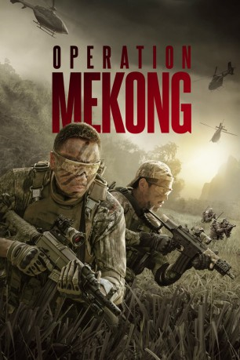

#11839 Operation Mekong
 gesehen am 01.10.2019
gesehen am 01.10.2019
 
 IMDB-Wertung: 6.6 / 10
IMDB-Wertung: 6.6 / 10  Tomatometer: 78
Tomatometer: 78  Metascore: 0
Metascore: 0 
Zur Aufklärung von Todesfällen auf dem Mekong wird eine Spezialeinheit unter der Führung des erfahrenen Gang Gao in das Gebiet geschickt. Die Spuren führen die Ermittler geradewegs zu Drogenbaron Naw Khar, der sein Hoheitsgebiet mit Terror und Gewalt sichert. Seine tief im Dschungel gelegene Rauschgift-Homebase scheint uneinnehmbar - doch genau das werden Gang Gao und sein Team ändern...
Jahr: 2016
Dauer: 123 Minuten
FSK: 16
Land: China Studio: Koch MediaTonspuren:
Untertitel: Deutsch,
Auflösung: 1080p (1920x808) Größe: 10178 MB
Genre: Action, Thriller, Drama, Abenteuer, Krimi, Mystery, Geschichte
Regisseur: Dante Lam
Drehbuch: Dante Lam, Kang Kei Chu, Siu Kwan Lau, Wai Ching Tam, Eric Lin
Soundtrack: Julian Chan, Henry Lai, Kwan Fai Lam
Darsteller:
 Hanyu Zhang als Gao Gang
Hanyu Zhang als Gao Gang Eddie Peng als Fang Xinwu
Eddie Peng als Fang Xinwu- Baoguo Chen als Jiang Haifeng, Minister of Public Security
- Wenjuan Feng als Guo Bing
 Ken Lo als Xing Deng
Ken Lo als Xing Deng- Carl Ng als Pierre
- Mandy Wei als Fang Xinwu's Girlfriend
 Vithaya Pansringarm als P'Som
Vithaya Pansringarm als P'Som- Jiaxuan Li als Assistant to the Minister
- Rui Wang als Crewman
- Zitong Yang als Crewman
- Ganesh Acharya als Mr. Zar
- Chun Sun als Yu Ping
- Xudong Wu als The Bulls Team Leader
- Jian Zhao als Guo Xu
- Xianda Liu als Xie Wenfeng
- Liguo Zhan als Fu Baowei
- Bhubhing Bhangsa-Ard als San Kyi
- Pawarith Monkolpisit als Naw Khar
- Amigo als Bingo
- Zobra als Bingo
- Guanfeng Wu als Gu Wei Cheng
- Cshi Zhanjie als Jiang Xing
- Wenting Hao als Gao Gang's Wife
- Rui Ren als Bei Bei
- Xialong Wong als Zhang Da An
- Ziqiang Liu als Crewman
- Bing Bo als Crewman
- Hong Li als Crewman
- Jing Guo als Crewman
- Yue Ji als Crewman
- Chao Han als Crewman
- Haohang Li als Crewman
- Shuo Li als Crewman
- Chao Yang als Crewman
- Nan Li als Crewman
- Lu Li als Crewman
- Ming Li als Bull
- Chien Ting Yeh als Bull
- Dong Ying Lin als Bull
- Frank See als Bull
- Steven Lee als Bull
- Alex Ng als Bull
- Nelson Chow als Chinese Elite Squad
- Edmund Yep als Chinese Elite Squad
- Elson Tan als Chinese Elite Squad
- Kok Han Yap als Chinese Elite Squad
- C.J. Kit als Chinese Elite Squad
- Ken Leong als Chinese Elite Squad
- Andy Yuen als Chinese Elite Squad
Datei: X:\NEU\Operation Mekong (2016, FSK16, 1920x808).mkv seit 01.10.2019
 Es gibt insgesamt 187 Filme in der Gruppe 'NEU'
Es gibt insgesamt 187 Filme in der Gruppe 'NEU'